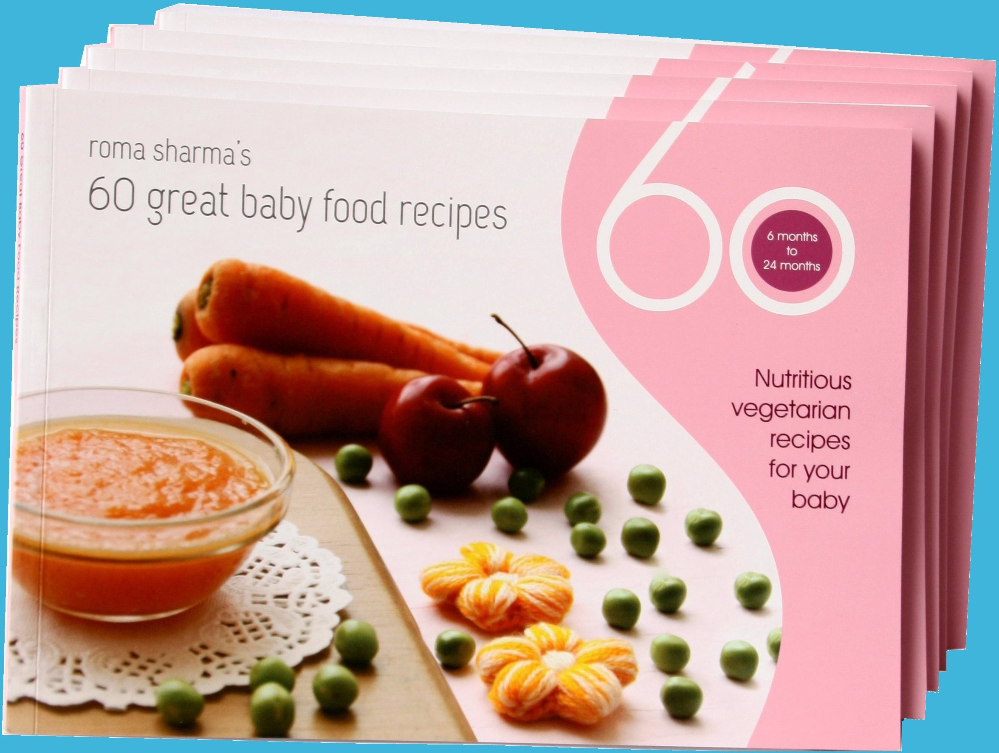

60 Great Baby Food Recipes
60 nutritious, Indian vegetarian baby food dishes that you can start feeding your toddler 6 months onwards.

This book is an encapsulation of my journey as a mother and my learnings in the process introducing solids to my babies. It contains 60 handpicked, vegetarian recipes that have been reviewed by experts like a pediatrician and nutritionist to ensure accuracy in the information provided. The focus is on babies between the age of 6-18 months. The recipes have been categorized based on the baby's age.
In the first one year of a baby's development there are several restricted ingredients. Food made for them changes every few months. Along with that comes the added responsibility of feeding them healthy food. Since babies can't express themselves, their likes and dislikes have always been a mystery. The main aim of this book is to simplify this phase by creating food that is not only nutritious but also liked by the baby. Besides recipes the book contains information on travel food, medicinal food, tips to tackle fussy eaters and more....
60 recipes have been divided in 4 phases of a baby's growth from 6 months to above one year. Each phase has its own challenges of right food for, digestion and nutrient intake..
In the first one year babies often face problems like cold, stomach ache due to gas, diarrhea, nappy rash, constipation etc; In this book you will find simple home remedies to tackle these common ailments.
This book contains only Indian Vegetarian Recipes. India's diversity is reflected in this book as it covers recipes from different parts of the country.
 Travel Food
Travel Food Travelling with a baby can be quite a challenge as its risky to feed a little baby anything bought outside. Use travel tips provided in this book to have a great journey.
Every baby has unique likes and dislikes. The baby, not being able to speak, adds more responsibility on our part to look for patterns of acceptance or rejection

After the age of 8 months babies can be given soft idlies, dosas, ect.
The natural sweetness of carrots makes this halwa or mash appetizing for a trial.

Green moong dal serves as a great pick-n-eat dish for the baby.
The vitamin, mineral and protein content of green moong dal can be substantially increased by sprouting.

Upma can be made using a variety of base ingredients like vermicelli, semolina, beaten rice, etc.
This soft mash made out of roasted whole wheat flour is not only delicious but also easy to swallow.
{kind=link}
{kind=link}
{kind=link}